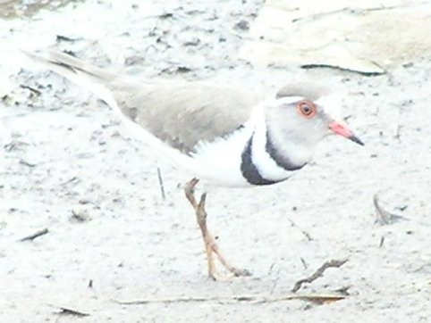
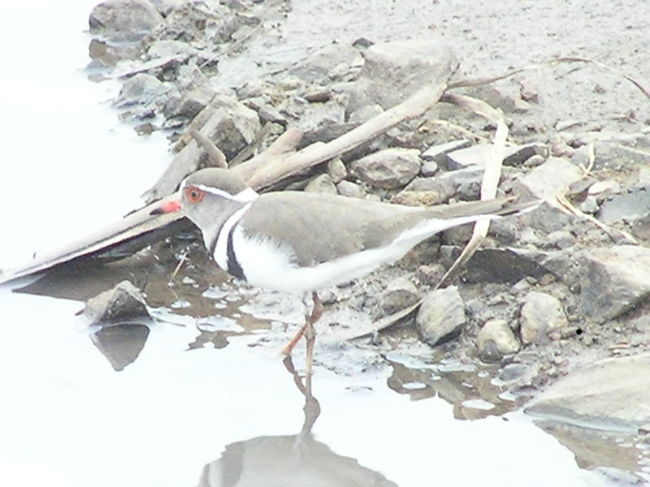
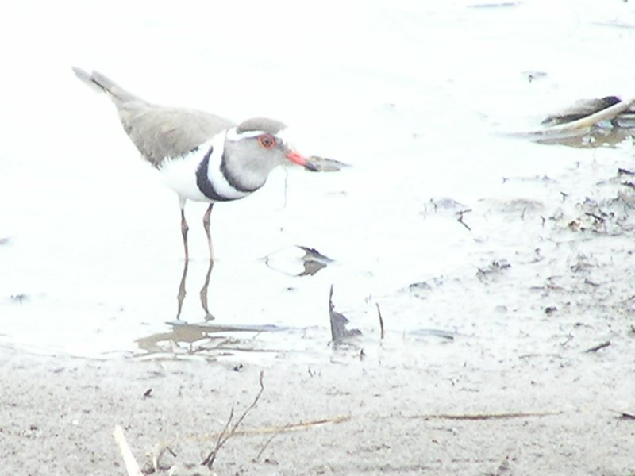

|  |  |  |
This bird was one of a pair in a pool in a large stone pit/quarry close to habitation.
This bird has a grey cap, unlike the illustration in 'Birds of Africa', which has a distincly black cap. Even so its eye ring, orange and black beak and pink legs make identification fairly certain. It is a curiously named species as it has only two bands.